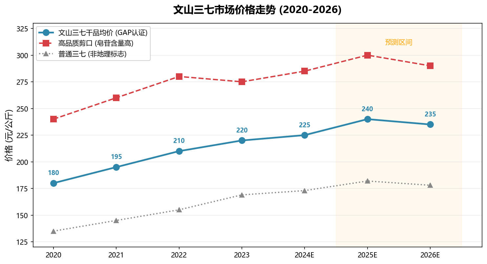

文山三七产业链深度
深度专题笔记 — 从种植技术演进到国际品牌战略的文山三七全产业链剖析。
一、产业概览
文山是中国三七（Panax notoginseng）的原产地和绝对主产区，全国 90% 以上的三七产自文山。三七被誉为"金不换"，是活血化瘀类中成药的核心原料，代表性药品包括云南白药、片仔癀、血塞通（三七总皂苷）等。
| 指标 |
2023 年 |
2025 年目标 |
| 种植面积 |
约 15 万亩 |
12-16 万亩 |
| 干三七产量 |
约 2 万吨 |
1.8-2.2 万吨 |
| 综合产值 |
突破 200 亿元 |
350 亿元 |
| 年增速 |
8-10% |
8-10% |
关联阅读：三七产业、三七特产
二、种植技术演进（上游）
2.1 核心挑战：连作障碍
三七种植最大的技术瓶颈是连作障碍——同一块土地种植三七后，需间隔 10-15 年才能再次种植，否则根腐病爆发率极高。这严重制约了种植面积扩张。
2.2 突破性技术
| 技术方向 |
关键进展 |
效果 |
| 轮作模式 |
"三七—玉米/烟草"轮作、"林下三七"仿野生种植 |
部分缓解土地紧张，林下三七品质接近野生 |
| 良种选育 |
"文山三七 1 号""滇七 1 号"已推广，抗病/高皂苷新品种在研 |
亩产稳定提升，抗逆性增强 |
| 绿色种植 |
有机肥替代化肥、木霉菌防治根腐病、GAP 规范种植 |
农药残留显著降低，符合药典新标准 |
| 数字化管理 |
物联网实时监测土壤温湿度/光照 |
种植标准化率从 30% 提升至 60%+ |
| 连作障碍攻关 |
云南农业大学解析三七基因组，揭示连作障碍分子机制 |
目标：轮作间隔缩短至 5-8 年 |
2.3 种植区域分布
| 主产区 |
优势 |
占比（估算） |
| 文山市 |
核心产区，三七交易中心 |
35% |
| 砚山县 |
大规模基地化种植 |
30% |
| 马关县 |
高海拔冷凉气候，品质优 |
15% |
| 丘北县 |
轮作土地资源相对充裕 |
10% |
| 其他 |
麻栗坡、西畴等 |
10% |
关联阅读：文山市深度、砚山县深度
三、加工链条（中游）
3.1 加工层级图谱
初加工（清洗/修剪/分级）
├── 三七主根 → 中药饮片 / 三七粉
├── 剪口 → 高皂苷含量提取物
├── 筋条 → 中端保健品原料
└── 绒根 → 饲料添加剂 / 低端提取
↓
深加工
├── 中药饮片（三七粉、三七片）
├── 提取物（三七总皂苷、三七多糖）
├── 中成药（血塞通、云南白药、片仔癀）
├── 保健品（三七胶囊、口服液）
└── 日化品（三七牙膏、面膜、护肤品）
3.2 加工技术升级
| 技术 |
传统水平 |
当前水平 |
突破方向 |
| 皂苷提取率 |
约 20% |
30%+（超临界 CO₂萃取/大孔树脂） |
目标 35-40% |
| 质量控制 |
外观分级 |
HPLC 指纹图谱 + 重金属/农残全检 |
2020 版药典标准全覆盖 |
| 产品形态 |
原料/初加工为主 |
加工转化率从 20%→50%（2023） |
目标 70% |
| 追溯体系 |
无 |
"文山三七质量追溯平台"覆盖率 80% |
2026 年全覆盖 |
四、龙头企业
4.1 本地核心企业
| 企业 |
核心业务 |
规模（估算） |
| 文山三七科技有限公司 |
全产业链（种植→加工→销售） |
年营收约 10 亿元 |
| 云南三七科技有限公司 |
提取物、保健品、化妆品 |
年营收约 8 亿元 |
| 文山州三七研究院（产业化板块） |
品种选育 + 技术推广 + 成果转化 |
— |
| 苗乡三七 |
高端有机三七种植与品牌化 |
定位精品市场 |
4.2 全国龙头在文山的布局
| 企业 |
文山布局 |
三七关联 |
| 云南白药 |
自有种植基地 + 加工厂 |
核心原料最大采购方之一 |
| 昆药集团 |
原料采购 + 合作种植 |
血塞通（三七总皂苷）系列产品的原料基地 |
| 片仔癀 |
长期供应商合作 |
三七是片仔癀核心成分之一 |
| 鸿翔药业（一心堂） |
种植基地 + 终端零售 |
三七产品线上线下全渠道销售 |
五、科研院所与技术支撑
| 机构 |
研究方向 |
标志性成果 |
| 文山州三七研究院 |
品种选育、种植技术、病虫害防治 |
育成"文山三七 1 号"，制定多项种植/加工标准 |
| 云南农业大学 |
基因组学、连作障碍分子机制 |
解析三七基因组，揭示连作障碍成因 |
| 中国中医科学院中药研究所 |
药效物质基础、质量标准 |
支撑 2020 版《中国药典》三七标准修订 |
| 昆明理工大学 |
深加工技术（提取/纯化/制剂） |
开发三七皂苷高效提取工艺 |
2024-2026 年科研重点
- 连作障碍突破：分子育种 + 土壤微生物修复，目标轮作间隔缩短至 5-8 年
- 新药开发：心血管疾病、神经保护等新适应症研究
- 高纯度提取：皂苷纯度目标 90%+，满足欧美药典标准
- 国际化：推动三七进入 USP（美国药典）和 EP（欧洲药典）
六、市场价格分析

6.1 2023 年价格基准
| 品类 |
价格区间 |
说明 |
| 三七主根（80 头） |
150-200 元/kg |
主流规格，交易量最大 |
| 三七剪口（高品质） |
250-300 元/kg |
皂苷含量最高，药企首选 |
| 三七筋条 |
100-130 元/kg |
保健品原料 |
| 三七粉（终端零售） |
300-500 元/kg |
品牌溢价差异显著 |
| 绿色三七（GAP 认证） |
溢价 30% |
干品均价约 220 元/kg |
6.2 价格波动因素
| 驱动因素 |
影响方向 |
典型场景 |
| 气候异常（干旱/洪涝） |
↑ 10-20% |
2021 年干旱导致减产 |
| 病虫害爆发（根腐病） |
↑ 15-25% |
局部产区受损 |
| 药企集中采购 |
↑ 5-10% |
云南白药年度采购季 |
| 种植面积扩张 |
↓ 5-10% |
新产区进入收获期 |
| 政策收紧（药典新标准） |
↑（合规产能溢价） |
淘汰不合规小产能 |
6.3 2024-2026 年价格展望
| 年份 |
预测方向 |
幅度 |
理由 |
| 2024 |
平稳 |
±5% |
供需平衡，无重大气候异常 |
| 2025 |
小幅上涨 |
5-8% |
保健品/化妆品市场扩张拉动需求 |
| 2026 |
稳中有降 |
±3% |
连作障碍缓解 + 种植面积小幅回升 |
七、品牌建设与地理标志保护
7.1 地理标志
| 维度 |
详情 |
| 获批时间 |
2002 年获原国家质检总局批准 |
| 保护范围 |
文山州 8 县（市）全境 |
| 授权企业 |
2023 年约 30 家，2024 年目标 40 家 |
| 法律依据 |
《地理标志产品保护规定》+《文山三七地理标志产品保护管理办法》 |
7.2 品牌价值
- 区域公共品牌：2023 年品牌价值约 200 亿元（中国品牌价值评价）
- 品牌矩阵：
- 公共品牌："文山三七"（云南省重点打造）
- 企业品牌：云南白药、昆药集团、"苗乡三七"等
- 产品品牌：血塞通、三七粉等终端产品
7.3 品牌推广渠道
| 渠道 |
形式 |
效果 |
| 文山三七节 |
每年举办，集展览/论坛/交易于一体 |
品牌曝光 + 商务对接 |
| 电商直播 |
抖音/淘宝等平台带货 |
线上销售额占比快速提升 |
| 国际展会 |
中国国际中医药博览会、世界中医药大会 |
拓展海外市场 |
| 产业旅游 |
三七种植基地观光 + 三七文化体验 |
赋能文旅融合 |
关联阅读：砚山康养（三七养生旅游新业态）
八、2024-2026 年趋势与展望
机遇
- 政策红利：国家《"十四五"中医药发展规划》+ 云南省生物医药三年行动计划
- 需求扩张：人口老龄化 → 心血管用药增长；消费升级 → 保健品/化妆品市场
- 技术突破：连作障碍缓解、深加工技术提升、质量标准国际化
- RCEP 机遇：东南亚市场对中医药认可度高，出口关税降低
挑战
- 土地资源约束：适宜种植土地有限，扩产空间接近天花板
- 质量控制：部分小企业/农户违规用药，品牌形象受损风险
- 国际竞争：越南、老挝尝试种植三七，长期可能冲击市场
- 价格波动：中药材市场的周期性波动难以完全规避
发展建议
短期（2024-2025）
├── 全产业链追溯覆盖率提升至 100%
├── 深化与云南白药/昆药/片仔癀的订单农业合作
└── 建设文山三七国际交易中心（定价中心）
中期（2025-2027）
├── 突破连作障碍，轮作间隔缩短至 5-8 年
├── 推动三七进入 USP/EP 国际药典
└── 培育 3-5 个十亿级三七品牌企业
长期（2027-2030）
├── 打造千亿级三七产业集群
├── 实现三七"品种权 + 品牌权 + 定价权"三权在手
└── 建设世界三七之都，成为全球三七产业标准制定者
本文基于 2024-2026 年公开资料与研究数据综合撰写。关联：三七特产基础、三七产业总览、经济全景中的三七定位、三七产业在乡村振兴中的案例。
外部参考文献
- 国家药监局：2020版《中国药典》三七项 — https://www.nmpa.gov.cn
- 国家知识产权局：地理标志产品保护公告（文山三七）
- 云南省科技厅：云南省生物医药产业高质量发展三年行动计划 — https://kjt.yn.gov.cn
- 中国中药协会：三七行业年度报告
- 中国日报云南频道：文山三七产业专题报道
- 文山州三七和中医药产业发展中心：行业监测数据 — https://www.ynws.gov.cn
- 云南农业大学：三七连作障碍攻关研究（基因组学方向）
- 国际药用植物标准机构（IASP）：Panax notoginseng 国际标准